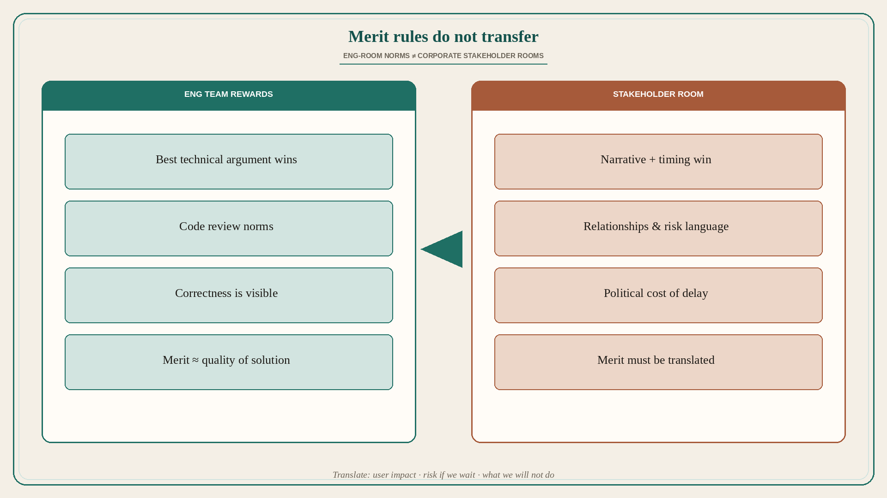

Eng-turned-PMs: corporate does not reward merit the way eng teams do
Source: George / prodmgmt.world (@nurijanian)
original post
What it claims
Engineers-turned-PMs keep making the same psychological error in stakeholder meetings: they assume corporate environments reward merit the same way engineering teams do. After studying the pattern for years, the author says they have identified the core disconnect that nobody discusses — but that disconnect is not present in the API text (no note_tweet). The claim we have: transferring eng-room merit rules into corporate stakeholder rooms is a systematic mistake. (API returned only the hook text; the rest of the thread was not in note_tweet. Detailed steps are not invented here.)
Why it matters for a PO
A PO from eng who “just brings the best technical argument” into a steering committee often loses to narrative, relationships, and political timing — then concludes the room is irrational. The room is playing a different reward game. Translate merit into stakeholder language (risk, cost of delay, user outcome) instead of expecting code-review norms to carry the day.
3 takeaways
- Do not assume corporate stakeholder rooms reward merit like eng teams do.
- That assumption is a repeating psychological error for engineers-turned-PMs.
- Translate the strongest technical case into the room’s actual reward language.
Practice this week
Before your next stakeholder meeting, rewrite your strongest eng argument as: user impact, risk if we wait, and what we will not do. Ask one trusted peer whether that lands for non-eng. Do not open with “the architecture is wrong” as the first slide.